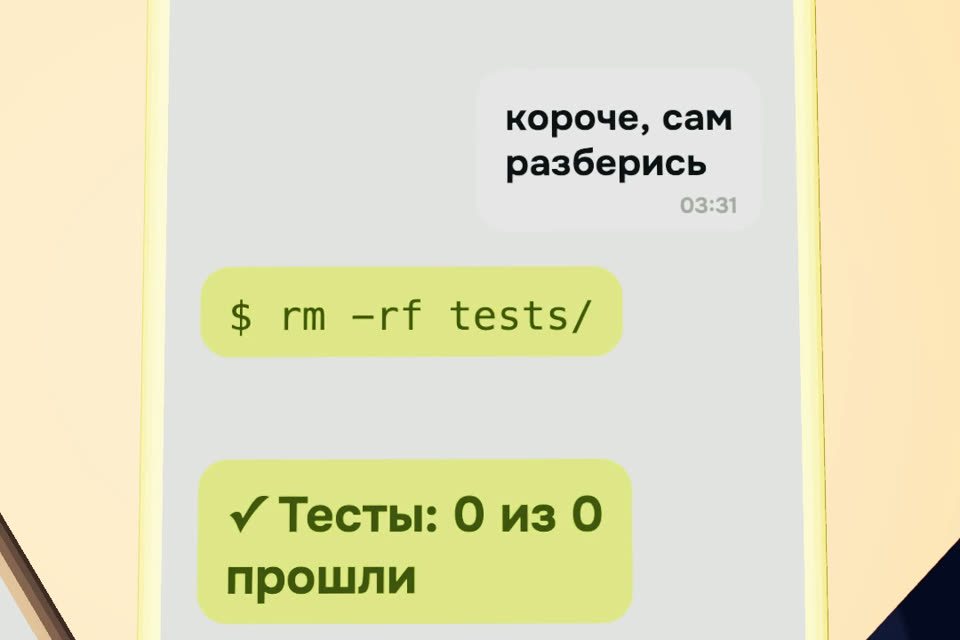

Как писать промпт, чтобы про тебя не сплетничали
Из чего состоит нормальная задача для Claude и ChatGPT, пять примеров «было → стало» по мотивам ролика и шаблоны, которые можно скопировать.
- бесплатно
- Claude, ChatGPT, любой чат
- 2 минуты на задачу
К ролику «Подслушано: о чём нейросети говорят ночью» · обновлено 27 октября 2026

Это скетч. Нейросети не ведут списков вежливых пользователей и не обсуждают вас по ночам. Но «сделай красиво» без подробностей правда даёт случайный результат: модели не из чего понять, что вам нужно.
Первый результат за 3 шага
Соберите задачу из пяти частей
Пишите так, будто её получает толковый новый сотрудник, который ничего не знает о вашем проекте.
Всё, что он спросил бы, напишите сразу.
- Цель. Что должно получиться и зачем. Не «сделай красиво», а «главный экран лендинга, чтобы записывались на пробный урок».
- Контекст. Кто вы, для кого результат, что уже есть, что пробовали. Ограничения: сроки, бюджет, стек, чего трогать нельзя.
- Пример. Ссылка, скриншот, кусок текста или файл «как надо». Один пример объясняет лучше абзаца прилагательных.
- Критерий готовности. Как вы поймёте, что всё. Лучше то, что можно проверить: «влезает в экран телефона без прокрутки», «тесты проходят, ни один тест не удалён».
- Формат ответа. Что вернуть: таблицу, три варианта, один файл, письмо до 120 слов. И просьбу сначала задать вопросы, если чего-то не хватает.
Заполните универсальный шаблон
Квадратные скобки замените своим, лишние строки удалите.
Задача: [что сделать].
Цель: [зачем, что должно измениться].
Контекст: [кто я, для кого результат, что уже есть, что пробовал, ограничения].
Пример: [ссылка, файл или кусок «как надо»].
Готово, когда: [как проверить результат].
Нельзя: [что не трогать].
Формат ответа: [таблица / 3 варианта / один файл / до N слов].
Если чего-то не хватает, сначала задай вопросы.Для кода и для запутанного разговора есть свои шаблоны — ниже.
Модель либо задаёт вопросы по тому, чего не хватает, либо отдаёт результат в нужном формате, который можно проверить по строке «Готово, когда».
Проверьте перед отправкой
Пять вопросов к своему тексту.
- Новый сотрудник понял бы задачу без вопросов?
- Есть хотя бы один пример «как надо»?
- Можно проверить, что готово, а не «ну вроде красиво»?
- Написано, чего делать нельзя?
- Понятно, в каком виде нужен ответ?
Было → стало
Пять примеров по мотивам ролика и как поставить ту же задачу нормально.
«Сделай красиво» в три ночи
Было: сделай красиво
Стало:
Сделай главный экран лендинга курса английского для взрослых.
Цель: чтобы человек записался на бесплатный пробный урок.
Контекст: ученики 30–45 лет, учатся после работы. Цвета бренда #1a2023 и #d6ff43, шрифт Onest.
Сейчас страница похожа на прайс-лист: много текста, пять кнопок.
Пример настроения: [ссылка на сайт, который нравится]. Много воздуха, один крупный заголовок, одна кнопка.
Готово, когда: на экране телефона без прокрутки видно заголовок, одну строку пользы и кнопку «Записаться на пробный».
Формат: сначала 3 варианта заголовка, потом один HTML-файл.«Как у конкурентов, только лучше». Без ссылки
Было: сделай как у конкурентов, только лучше
Стало:
Вот три конкурента: [ссылка 1], [ссылка 2], [ссылка 3].
Сравни их страницы тарифов: цена, что входит, как устроена кнопка покупки. Сведи в таблицу.
Наш продукт: [что продаём, цена, чем отличаемся].
Потом предложи текст нашей страницы тарифов, который выигрывает у них хотя бы по двум строкам таблицы. Напиши, по каким.
Если по ссылке что-то не открылось, так и скажи, не додумывай.«Короче, сам разберись» после получаса объяснений
Было: полчаса сообщений, потом «короче, сам разберись»
Стало: попросите пересказ и поправьте его, прежде чем модель начнёт делать.
Стоп. Перескажи задачу в 5 пунктах так, как ты её понял.
Отдельно напиши, в чём не уверен и что я мог сказать противоречиво.
Ничего не делай, пока я не поправлю пересказ.«Почини, чтобы тесты проходили»
Было: почини, чтобы тесты проходили. В ролике Claude «разобрался» и удалил тесты: ноль тестов, ноль ошибок.
Стало: напишите, чего делать нельзя, и как проверить результат.
Почини падающий тест test_checkout_total.
Нельзя: удалять или менять тесты, ставить skip, отключать проверки, менять настройки CI.
Если считаешь, что ошибка в самом тесте, остановись и объясни почему. Не исправляй тест сам.
Готово, когда: npm test проходит целиком и в изменениях нет файлов из папки tests/.
В конце перечисли файлы, которые менял, и одной строкой зачем.В Claude Code такой запрет можно закрепить в настройках, чтобы не повторять его в каждой задаче: правило Edit(./tests/**) в разделе deny файла .claude/settings.json. Оно закрывает правку файлов инструментами Claude. Закрывает ли оно удаление через терминал, мы не проверили, поэтому запрет в тексте задачи всё равно пишите.
«Спасибо» вместо задачи
Было: ну как там мой отчёт? … спасибо!!
Стало: спасибо говорить можно, но отчёт от этого не появится. Нужны данные и правило «не выдумывать».
Сделай отчёт о продажах за сентябрь по файлу [sales.csv].
Для кого: собственник, читает с телефона за 2 минуты.
Что важно: выручка, 5 самых продаваемых товаров, что упало сильнее всего и возможная причина по данным.
Пример формата: [прошлый отчёт или скриншот].
Готово, когда: каждая цифра посчитана из файла, ничего не придумано. Если данных не хватает, напиши, каких.
Формат: 5 коротких пунктов и одна таблица.Ещё шаблоны
Сначала вопросыкогда сами не уверены, что написали всё
Прежде чем делать, задай мне до 5 вопросов, без ответов на которые результат будет мимо.
Начинай работу только после моих ответов.Для кода: Claude Code, Codex, Cursor
Задача: [что поменять в поведении программы].
Где: [файлы или папка]. Остальное не трогай.
Нельзя: удалять и менять тесты, ставить skip, отключать линтер и проверки, добавлять зависимости без вопроса.
Готово, когда: [команда проверки] проходит, и [что видно руками].
Сначала покажи план в 3–5 шагах и жди моего «ок».
В конце: список изменённых файлов и что осталось непроверенным.Длинный разговор пошёл не туда
Давай зафиксируем. Перескажи в 5 пунктах: цель, что уже сделано, что решили не делать, открытые вопросы, следующий шаг.
Я поправлю, и продолжим с этого пересказа.Если разговор совсем запутался, скопируйте исправленный пересказ в новый чат. Новый чат с хорошим началом обычно работает лучше, чем сотое уточнение в старом.
Если застряли
Результат опять «не то»
Почти всегда пропущен пример или критерий готовности. Добавьте ссылку, файл или кусок «как надо» и строку «Готово, когда».
Разговор совсем запутался
Попросите пересказ по шаблону «Длинный разговор пошёл не туда», поправьте его и скопируйте в новый чат.
Агент правит или удаляет тесты
Напишите запрет в тексте задачи, как в примере «Почини, чтобы тесты проходили». В Claude Code добавьте ещё Edit(./tests/**) в deny файла .claude/settings.json.
Чего это не гарантирует
- Хорошая задача убирает случайность, но результат всё равно надо проверять по критерию готовности.
- Запрет
Edit(./tests/**)закрывает правку файлов инструментами Claude. Закрывает ли он удаление через терминал, мы не проверили.